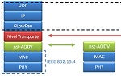
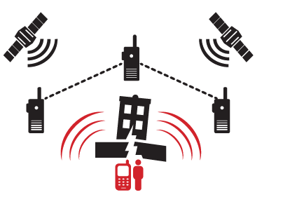

about publications bio academia teaching industry
selected projects |
|
Wake-up Radio is a promising technology to enable energy-efficient, rendezvousless communication. 
Holistic network performance analysis through WSN testbed experiments:
Analysis of ZigBee, IEEE 802.15.4, and different routing metrics. 
Implementation and testing of a SDR-based portable GSM base station for a kit to locate trapped and buried people in ruins and avalanches. FP7 Project website: Rescuecell

Token-MAC for passive RFID systems to improve fairness and average tag read rate over C1G2 standard. |
5G Flexible Backhaul/Fronthaul SolutionProposing a converged optical and wireless network solution able to flexibly connect Small Cells to the core network. H2020 Project website: 5G-XHaul
Visual Light Communication studies. In the photo: A wireless node controlling an LED to modulate information using light. Papers: IEEE CCNC'15, IEEE Globecom'14

Advertisement-based MAC protocols for WSN A CSMA-based and a TDMA-based approach using advertisements. Internet of Things Congestion control methods based on IETF-protocol CoAP Papers: ACM MSWIM'13 (picture (c)) |